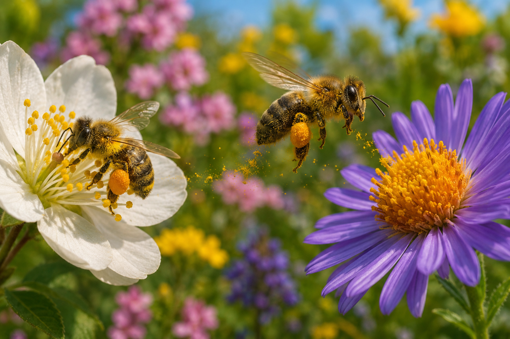
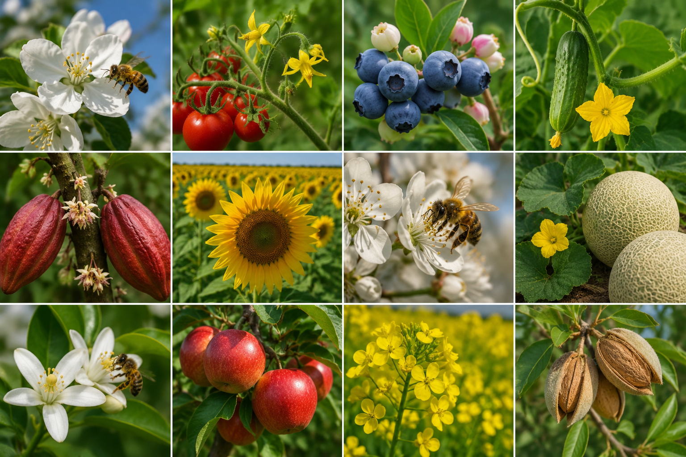
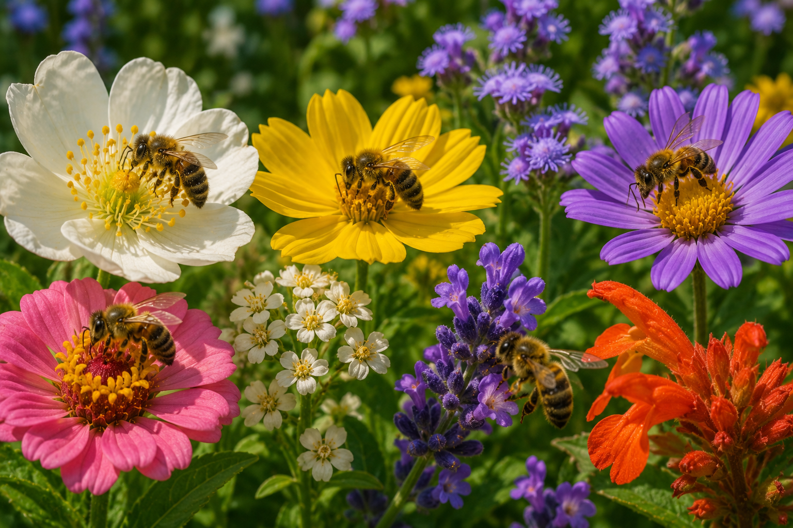

O que aconteceria com nossa alimentação sem as abelhas?
As abelhas são responsáveis pela polinização de grande parte das plantas que produzem alimentos consumidos diariamente. Descubra por que elas são essenciais para a segurança alimentar do planeta.
Galeria Visual



Diagnóstico
Desafio Interativo
Teste seus conhecimentos sobre a importância das abelhas para a produção de alimentos.
Panorama Geral
Impactos
Casos e Exemplos Reais
Conteúdo Multimídia
Materiais Complementares
- 🎙 Podcast sobre biodiversidade
- 🎥 Documentários ambientais
- 📘 Guias de polinização
- 📰 Artigos científicos adaptados
Soluções
Perguntas Frequentes
Reflexão Final
Se as abelhas desaparecessem amanhã, como sua alimentação mudaria?
Pequenas atitudes podem proteger esses importantes polinizadores e ajudar a garantir alimentos para as próximas gerações.
Compartilhe essa ideia